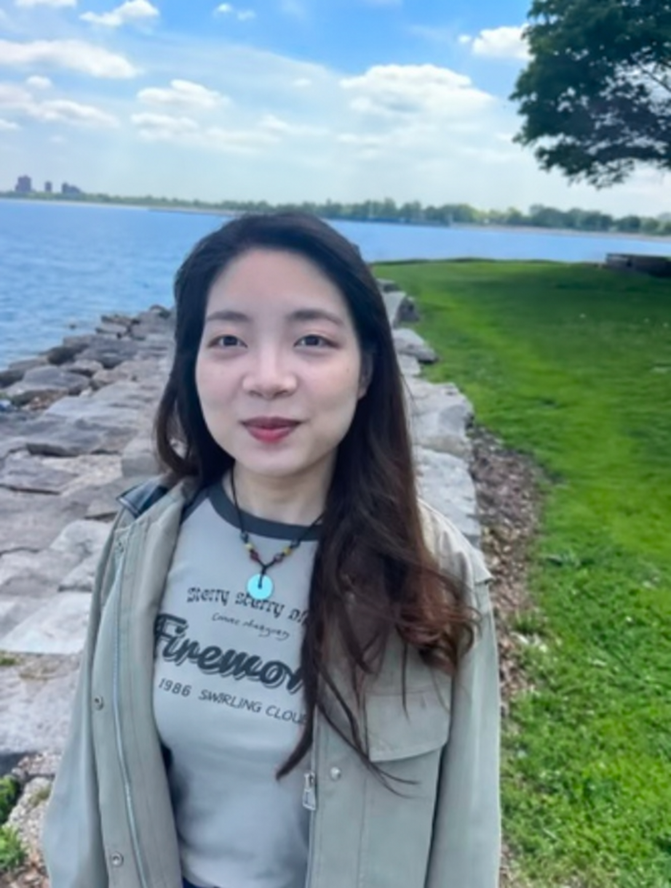

Computational & Applied Mathematics
Wenwen Li
PhD student · University of Chicago
I develop statistical and computational methods for learning and inference in systems with physical or geometric structure. My research connects Bayesian inverse problems, Gaussian process methods, and data assimilation, combining mathematical analysis with numerical experiments.
I am advised by Prof. Daniel Sanz-Alonso. I am particularly interested in how uncertainty, geometry, and model error affect an algorithm’s behavior.
Computing Python · R · MATLAB

Background
University of Chicago
PhD student, Computational and Applied Mathematics
2024–present
Sichuan University
BSc, Mathematics and Applied Mathematics
2019–2024
University of British Columbia
Mitacs Globalink Research Intern · 2023
I worked with Prof. Christoph Ortner on stability of inverse problems for linear atomic cluster expansion models.